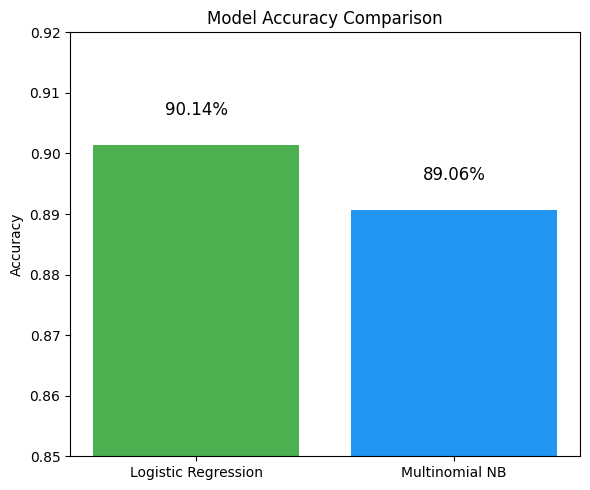

Linear regression is a method used to predict a continuous outcome (like price or score) based on input variables. It fits a straight line that best represents the relationship between inputs and the target, minimizing the difference between predicted and actual values. Logistic regression, on the other hand, is used for classification—it predicts the probability of a categorical outcome, usually binary like yes/no. It uses a similar mathematical structure to linear regression but applies a transformation to output probabilities instead of raw numbers. Both models use weighted inputs and are trained with optimization methods, but their goals and outputs are fundamentally different.
What is Logistic Regression?
Logistic regression is used to predict the probability of a categorical outcome, typically a binary one like “yes” or “no.” Instead of fitting a straight line, it uses a curve to map input values to probabilities between 0 and 1. These probabilities are then used to classify the input into one of two categories. Logistic regression is widely used for tasks like customer churn prediction, spam detection, and disease diagnosis. It’s valued for its simplicity, speed, and ability to output interpretable results.
Comparison between Linear and Logistic Regression prediction outputs.
Similarities and Differences Between Linear and Logistic Regression
Both linear and logistic regression use a linear combination of input features to make predictions and are easy to implement and interpret. However, linear regression is used for predicting continuous numeric values, while logistic regression is used for classification. Linear regression outputs raw numbers, while logistic regression converts outputs to probabilities and then categories. They also differ in how they are evaluated: linear regression uses error-based metrics like mean squared error, whereas logistic regression uses metrics like accuracy, precision, and AUC. Despite their differences, both models serve as fundamental tools in machine learning.
The Role of the Sigmoid Function in Logistic Regression
The sigmoid function is used in logistic regression to convert any number into a value between 0 and 1. This transformation allows the model to output probabilities, which are then used to classify inputs into categories. For example, a result of 0.82 means there’s an 82% chance that the input belongs to the positive class. Without the sigmoid function, the model would behave like linear regression and produce values outside the 0–1 range. The sigmoid is what makes logistic regression suitable for binary classification tasks.
S-curve output of logistic regression vs linear prediction line.
How Maximum Likelihood Is Used in Logistic Regression?
Logistic regression is trained using Maximum Likelihood Estimation (MLE). MLE finds the model parameters that make the observed outcomes most probable given the input data. It works by comparing the model’s predicted probabilities to the actual labels and adjusting the parameters to improve the fit. Unlike linear regression, which minimizes squared errors, logistic regression maximizes the likelihood of correct classifications. This makes MLE the key optimization method behind the learning process in logistic regression.
The dataset was first loaded and cleaned to separate input features (X) from the target variable (y). The target column contained categorical responses (“yes” and “no”), which were encoded into binary format using LabelEncoder, converting “yes” to 1 and “no” to 0. Next, the dataset was examined to distinguish between numerical and categorical features. This separation was essential for applying appropriate preprocessing techniques tailored to each model.
Two separate preprocessing pipelines were created—one for Logistic Regression and another for Multinomial Naive Bayes (MNB)—as both models have different requirements. Logistic Regression used StandardScaler to standardize numerical features and OneHotEncoder (with drop='first') to handle categorical variables, avoiding multicollinearity. For MNB, numerical features were scaled using MinMaxScaler to bring all values into the 0–1 range, which suits the assumptions of the Naive Bayes model. Categorical encoding remained the same across both pipelines.
PART OF THE DATASET AFTER PREPARING FOR REGRESSION
To ensure reliable and fair evaluation, the entire dataset was split into training and testing subsets using an 80-20 ratio. This was done using train_test_split, with stratify=y_encoded to preserve the proportion of both classes (“yes” and “no”) in both sets. The training set was used to build the models, while the testing set was reserved for final evaluation. This disjoint separation is crucial to prevent data leakage, where information from the test set could influence the training process and produce misleadingly high performance.
The split ensured that the models would be evaluated on data they had never seen before, simulating real-world deployment. Keeping the same train-test split across both models allowed for a fair comparison under consistent conditions.
PART OF THE TRAINING DATASET FOR LOGISTIC REGRESSION
Both models—Logistic Regression and Multinomial Naive Bayes—were trained on their respective preprocessed training datasets. Once trained, each model made predictions on the test set, and their performance was evaluated using multiple metrics: accuracy, confusion matrix, and a full classification report including precision, recall, and F1-score.
Logistic Regression achieved high overall accuracy, but struggled to correctly identify the “yes” class due to class imbalance. Its recall for the positive class was notably low, indicating many false negatives. Multinomial Naive Bayes, while slightly lower in overall accuracy, performed significantly better in capturing the minority “yes” class, showing improved recall and F1-score. The confusion matrices and classification reports provided detailed insight into how well each model handled both majority and minority classes.
These evaluations highlighted the trade-offs between accuracy and balanced classification, especially when dealing with imbalanced datasets where one outcome is far more common than the other.
Logistic Regression shows strong overall accuracy. It excels at correctly predicting customers who won’t subscribe to a term deposit. However, it still misses a significant number of those who would subscribe, highlighting room for improvement in detecting the minority class.
Multinomial Naive Bayes
Accuracy: 89.06%
True Negatives: 7779
False Positives: 206
False Negatives: 783
True Positives: 275
MNB performs almost as well in predicting "no" cases but underperforms when identifying "yes" outcomes, with higher false negatives than logistic regression. This shows that while it's efficient and fast, MNB may be more sensitive to the structure of categorical features and less capable in imbalanced scenarios.
The visual confirms what the metrics suggest: both models are highly accurate overall, but Logistic Regression provides better recall for the positive class, making it a more reliable choice for identifying potential subscribers. However, neither model is perfect in handling class imbalance, and strategies like SMOTE or threshold tuning could further improve results.
ROC CURVE COMPARISON
Model Training: Both Logistic Regression and Multinomial Naive Bayes models were trained on preprocessed data.
Probability Predictions: For each model, predicted probabilities of the "yes" class were obtained using .predict_proba().
ROC Curve Computation: The True Positive Rate (TPR) and False Positive Rate (FPR) were calculated using roc_curve() for each model.
AUC Calculation: The Area Under the Curve (AUC) was computed using auc() to quantify the model's ability to distinguish between classes.
Visualization: The ROC curves of both models were plotted, along with the diagonal line representing a random classifier (AUC = 0.5) for comparison.
Logistic Regression
AUC: 0.91
Logistic Regression achieved an AUC of 0.91, indicating excellent performance in distinguishing between customers who subscribed and those who didn’t.
Multinomial Naive Bayes
AUC: 0.76
Multinomial Naive Bayes achieved a lower AUC of 0.76, which suggests moderate discriminative ability, though less effective compared to logistic regression.
The ROC curve for Logistic Regression lies consistently above that of Naive Bayes, showcasing better classification performance across different thresholds.
Overall, Logistic Regression outperforms Naive Bayes in terms of AUC, making it more reliable for binary classification in this banking dataset.
PRECISION-RECALL CURVE COMPARISION
Probability Prediction:
Probabilities for the positive class ("yes") were predicted using both Logistic Regression and Multinomial Naive Bayes models.
Curve Computation:
The precision_recall_curve() function was used to compute how precision and recall trade off at different thresholds.
Average Precision Score (AP):
This metric was calculated using average_precision_score() to summarize the precision-recall curve into a single number.
Visualization:
Precision-Recall curves were plotted for both models to provide a visual understanding of their effectiveness in detecting the minority class.
Logistic Regression achieved a significantly higher Average Precision (AP) of 0.55, demonstrating stronger ability to maintain a good balance between precision and recall across different thresholds.
Multinomial Naive Bayes yielded a lower AP of 0.39, showing reduced effectiveness in identifying true positives without sacrificing precision.
The curve for Logistic Regression remains higher than Naive Bayes for most of the recall range, reinforcing its superior performance especially in imbalanced classification scenarios.
Precision-recall curves are particularly important for imbalanced datasets, as they emphasize performance on the positive (minority) class, where Logistic Regression clearly outperforms Naive Bayes in this use case.
MODEL ACCURACY COMPARISION
This bar chart offers a clear side-by-side comparison of the overall accuracy of the two models used for classification: Logistic Regression and Multinomial Naive Bayes.
Logistic Regression achieved an accuracy of 90.14%, indicating its strong ability to correctly classify both 'yes' and 'no' outcomes, even in the presence of class imbalance.
Multinomial Naive Bayes, while slightly lower, still performed well with an accuracy of 89.06%.
The small difference in accuracy may seem negligible at first glance. However, in practical terms, even a 1% boost can translate into hundreds of correctly classified cases in large datasets. Moreover, Logistic Regression's stronger performance in metrics like precision, recall, F1-score, and AUC further reinforce its reliability for this prediction task.

CONCLUSION
Insights from Logistic Regression
The results of the Logistic Regression model offer valuable insight into how well certain customer patterns can help predict whether a person will subscribe to a term deposit. With an accuracy of over 90%, the model demonstrated that it can make reliable predictions based on the data provided. It performed especially well in identifying those who are not likely to subscribe, which is helpful for organizations aiming to reduce the effort spent on unlikely prospects.
However, what’s most meaningful is how Logistic Regression strikes a balance between identifying positive and negative outcomes. Even though it's slightly less sensitive to capturing the 'yes' responses, it still picked up on a substantial number of them, which is crucial for a real-world banking scenario. The model seems to be a practical fit when a company wants to maximize correct decisions while also limiting false alarms. The visualizations like the ROC and precision-recall curves confirmed that it maintains strong overall performance under different thresholds and criteria.
Comparing Multinomial Naive Bayes and Logistic Regression
When comparing both models, Logistic Regression consistently outperformed Multinomial Naive Bayes across most evaluation criteria. Although Naive Bayes did a fairly good job in terms of overall accuracy, it fell behind when it came to correctly identifying those rare 'yes' outcomes—the very predictions that matter most in campaigns aiming for conversions. The differences were especially visible in the confusion matrices and recall values, where Logistic Regression proved to be more balanced and nuanced in its predictions.
What this comparison teaches is that not all models are equally equipped to handle complex, real-world data, especially when the classes (yes/no) are imbalanced. Multinomial Naive Bayes tends to be quicker and simpler, but Logistic Regression offered more thoughtful predictions by better handling the subtle differences in features. In marketing contexts where precision matters—like predicting who will respond to a campaign—Logistic Regression seems to provide more actionable and trustworthy results.
OVERALL COMPARISON OF THE MODELS
Naive Bayes: Fast but Too Simple for the Task
Naive Bayes is based on probabilities and works under the assumption that all features (such as age, balance, job type, etc.) are independent of each other. This assumption helps it run very quickly and efficiently, especially on large datasets. In this project, Multinomial Naive Bayes achieved a respectable accuracy of ~89%, and it correctly identified many of the "no" responses, which are the majority in this imbalanced dataset.
However, its biggest weakness became clear when we looked at how it handled the rare "yes" cases—people who actually subscribed. It struggled to identify them well, often misclassifying them as "no." This happened because Naive Bayes relies too heavily on simple rules and doesn’t capture interactions or patterns between features. So, while it's great for quick, general predictions, it's not the best choice for nuanced decisions where context and feature relationships matter.
Decision Trees: Intuitive, Transparent, but Can Be Biased
Decision Trees work by splitting data into branches based on decision rules, almost like asking a series of yes/no questions. They’re easy to interpret and visualize, which makes them very appealing. Three variations of decision trees were tested in this project—with different settings for depth and feature selection.
The third tree, which was fine-tuned using entropy and limited depth, performed best with an accuracy of ~89%, slightly behind Logistic Regression but still strong. One of its strengths was its ability to highlight the most important features influencing decisions—like the outcome of previous marketing campaigns and how the customer was contacted. However, trees are also prone to overfitting if not controlled properly, meaning they can learn noise in the data instead of general rules. Even though Decision Trees did well overall, they struggled with precision in detecting "yes" cases and weren’t as consistent across all metrics compared to LR.
Logistic Regression: Balanced and Reliable Performer
Logistic Regression ultimately came out on top in most performance metrics. It offered a clean balance between accuracy (90.1%) and meaningful recall/precision for both "no" and "yes" classes. Its biggest advantage is that it handles relationships between variables well, even when those relationships are subtle. This made it particularly good at recognizing the minority class—those who subscribed—without sacrificing performance on the majority class.
Another important advantage of Logistic Regression is its predictable behavior and stability. Unlike Decision Trees, which can change drastically with small changes in data, Logistic Regression remains consistent. It doesn’t assume feature independence (like Naive Bayes does), so it can capture more real-world complexity in behavior, especially when people’s decisions are influenced by multiple overlapping factors like job type, time of year, and previous contact history.
Which Model Works Best and Why?
In the context of predicting term deposit subscriptions—a task where class imbalance is a challenge, and precision matters—Logistic Regression turned out to be the most dependable and effective model. It offered strong accuracy, handled rare "yes" cases with more sensitivity than Naive Bayes or Decision Trees, and remained stable throughout testing.
Naive Bayes, while fast, was too simplistic for this task. It’s a good option when you need a quick, baseline model or when feature independence is reasonable—but not when decisions are shaped by many interacting factors.
Decision Trees gave interpretable results and helped expose which features mattered most, but they were not as good at generalizing and struggled with detecting positive cases consistently.
Therefore, for a real-world use case like this—where banking decisions can affect customers and business strategy—Logistic Regression provides the right mix of accuracy, fairness, and insight.